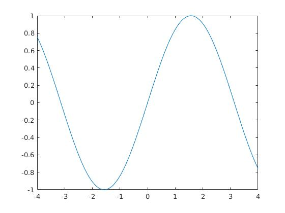
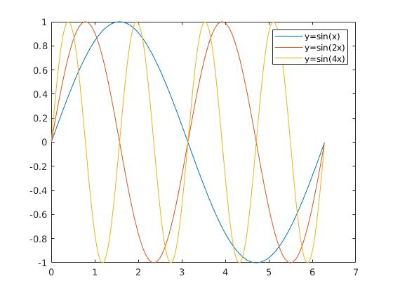
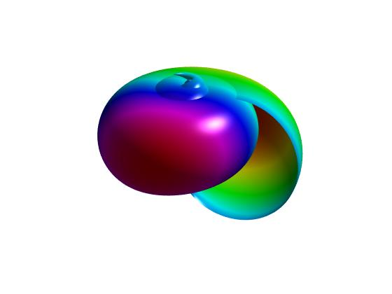

Matlab 基础
MATLAB（矩阵实验室）是 MATrix LABoratory 的缩写，是一款由美国 The MathWorks 公司 出品的商业数学软件。MATLAB 是一种用于算法开发、数据可视化、数据分析以及数值计算 的高级技术计算语言和交互式环境。除了矩阵运算、绘制函数/数据图像等常用功能外， MATLAB 还可以用来创建用户界面及与调用其它语言（包括C、C++、Java、Python 和 FORTRAN ）编写的程序。
尽管MATLAB主要用于数值运算，但利用为数众多的附加工具箱（Toolbox）它也适合不同领 域的应用，例如控制系统设计与分析、图像处理、信号处理与通讯、金融建模和分析等。另 外还有一个配套软件包Simulink，提供一个可视化开发环境，常用于系统模拟、动态/嵌入 式系统开发等方面。
Matlab 语法基础
变量（Variables)
>> x = 17
x =
17
>> x = 'hat'
x =
hat
>> x = [3*4, pi/2]
x =
12.0000 1.5708
>> y = 3*sin (x)
y =
-1.6097 3.0000
- 动态类型的语言
向量与矩阵 （Vectors and matrices)
- 冒号语法：
start:step:stop
定义一个行向量
>> a = 1:2:9
a =
1 3 5 7 9
>> a = 1:3:9
a =
1 4 7
- 中括号语法
下面定义一个矩阵 A， 空格或逗号隔开同一行的元素， 分号隔开不同行的元素
>> A = [16 3 2 13; 5 10 11 8; 9 6 7 12; 4 15 14 1]
A =
16 3 2 13
5 10 11 8
9 6 7 12
4 15 14 1
并访问第 2 行和第 3 列的元素。
>> A(2, 3)
ans =
11
用冒号语法访问子矩阵
>> A(2:4,3:4)
ans =
11 8
7 12
14 1
- 常见矩阵的生成
>> eye(3, 3)
ans =
1 0 0
0 1 0
0 0 1
>> zeros(2, 3)
ans =
0 0 0
0 0 0
>> ones(2, 3)
ans =
1 1 1
1 1 1
- 数组算术运算符
运算符 | 用途 | 说明 | 参考页 |
|---|---|---|---|
| 加法 |
| plus |
| 一元加法 |
| uplus |
| 减法 |
| minus |
| 一元减法 |
| uminus |
| 按元素乘法 |
| times |
| 按元素求幂 |
| power |
./ | 数组右除 |
| rdivide |
| 数组左除 |
| ldivide |
| 数组转置 |
| transpose |
- 矩阵算术运算符
运算符 | 用途 | 说明 | 参考页 |
|---|---|---|---|
| 矩阵乘法 |
| mtimes |
| 矩阵左除 |
| mldivide |
| 矩阵右除 |
| mrdivide |
| 矩阵幂 |
| mpower |
| 复共轭转置 |
| ctranspose |
画图
画一条曲线
>> x = -4:0.05:4;
>> y = sin(x);
>> plot(x, y)

>> x = 0:.01:2*pi;
>> y1 = sin(x);
>> y2 = sin(2*x);
>> y3 = sin(4*x);
>> plot(x, [y1; y2; y3])
>> legend('y=sin(x)', 'y=sin(2x)','y=sin(4x)')

>> t = linspace(0, 2*pi, 512);
>> [u,v] = meshgrid(t);
>> a = -0.4; b = .5; c = .1;
>> n = 3;
>> x = (a*(1 - v/(2*pi)) .*(1+cos(u)) + c) .* cos(n*v);
>> y = (a*(1 - v/(2*pi)) .*(1+cos(u)) + c) .* sin(n*v);
>> z = b*v/(2*pi) + a*(1 - v/(2*pi)) .* sin(u);
>> surf(x,y,z,y)
>> axis off
>> axis equal
>> colormap(hsv(1024))
>> shading interp
>> material shiny
>> lighting phong
>> camlight('left', 'infinite')
>> view([-160 25])

向量化操作
matlab 中的大部分函数都支持输入矩阵向量，即向量化操作
i = 0;
for t = 0:.01:10
i = i + 1;
y(i) = sin(t);
end
t = 0:.01:10;
y = sin(t);
下面给出矩阵乘法的两种实现的时间对比：
dim = 500;
A = randn(dim);
B = randn(dim) ;
tic;
C = A * B;
toc;
tic;
D = zeros(dim, dim);
for i = 1 : dim
for j = 1 : dim
sum = 0;
for k = 1 : dim
sum = sum + A (i , k ) * B (k , j );
end ;
D(i, j) = sum;
end
end
toc
时间结果如下：
Elapsed time is 0.159217 seconds.
Elapsed time is 0.461819 seconds.
数值实验模板
Matlab 实验报告
姓名：张三 学号：123456 班级：信计1班 评分：
一、 实验题目
二、 实现算法
三、 程序代码
四、 实验结果与分析
实验报告范例
Matlab 实验报告
姓名：张三 学号：123456 班级：信计1班 评分：
一、题目： 应用Jacobi迭代法求解如下方程组：
要求计算精度为 。
二、实现算法：对一般的 阶线性代数方程组
其相应的 Jacobi 迭代算法为：将 分解为 ，其中
则
Jacobi 迭代公式为
三、程序代码：
第一步，建立文本文件 jacobi.m, 并编写 Jacobi 迭代法函数， 实现如下：
function [x,k]=jacobi(A,b,x0,tol)
% jacobi 迭代法, 计算线性方程组的解
% tol 为输入误差容限, 迭代初值x0
maxit = 300;
D=diag(diag(A));
L=-tril(A,-1);
U=-triu(A,1);
B=D\(L+U);
f=D\b;
n = length(x0);
x = zeros(3, 300);
x(:, 1) = x0;
x(:, 2) = B*x(:, 1) + f;
k=2;
while ((norm(x(:, k)-x(:, k-1))>=tol)&&(k<maxit))
k = k + 1;
x(:, k) =B*x(:, k-1) + f;
end
x = x(:, 1:k);
end
第二步， 生成测试文件 test_jacobi.m， 内容如下：
A = [4 -1 1;4 -8 1;-2 1 5];
b = [7 -21 15]';
x0 = [0 0 0]';
tol = 1e-7;
x = jacobi(A, b, x0, 1e-7);
% 打印迭代结果
fprintf(' x(1) x(2) x(3)\n');
fprintf('%12.8e %12.8e %12.8e\n', x);
% 画图
plot(1:k, x)
legend('x(1)=2', 'x(2)=4', 'x(3)=3')
ylim([0, 5])
title('Jacobi 迭代结果')
四、实验结果与分析
在命令窗口输入 test_jacobi, 回车
>> test_jacobi
x(1) x(2) x(3)
0.00000000e+00 0.00000000e+00 0.00000000e+00
1.75000000e+00 2.62500000e+00 3.00000000e+00
1.65625000e+00 3.87500000e+00 3.17500000e+00
1.92500000e+00 3.85000000e+00 2.88750000e+00
1.99062500e+00 3.94843750e+00 3.00000000e+00
1.98710937e+00 3.99531250e+00 3.00656250e+00
1.99718750e+00 3.99437500e+00 2.99578125e+00
1.99964844e+00 3.99806641e+00 3.00000000e+00
1.99951660e+00 3.99982422e+00 3.00024609e+00
1.99989453e+00 3.99978906e+00 2.99984180e+00
1.99998682e+00 3.99992749e+00 3.00000000e+00
1.99998187e+00 3.99999341e+00 3.00000923e+00
1.99999604e+00 3.99999209e+00 2.99999407e+00
1.99999951e+00 3.99999728e+00 3.00000000e+00
1.99999932e+00 3.99999975e+00 3.00000035e+00
1.99999985e+00 3.99999970e+00 2.99999978e+00
1.99999998e+00 3.99999990e+00 3.00000000e+00
1.99999997e+00 3.99999999e+00 3.00000001e+00
计算结果表明，Jacobi 方法对于该问题，可以收敛于真解。
实验报告题目
在上述 Jacobi 迭代实验基础上, 完成以下实验任务：
- 下载线性系统 Ax=b, 用如下命令可把数据导入 Matlab：
>> load ls.mat
>> whos
Name Size Bytes Class Attributes
A 4225x4225 351392 double sparse
b 4225x1 33800 double
x 4225x1 33800 double
- 把上述 Jacobi 迭代函数中的
x(:, 2) = B*x(:, 1) + f语句用 for 循环实现，测量 计算时间，并与原始代码进行比较。